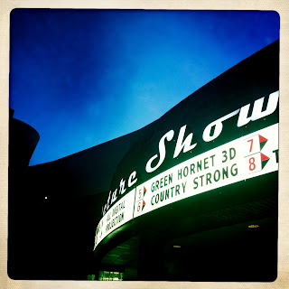

Recovered weblog entry
Movie night

Two brothers... One speaks no English, the other learned English from watching "The Wide World of Sports." So you tell me... Which is better, speaking no English at all, or speaking Howard Cosell?- Lane MyerLens: John S
Film: Ina's 1969